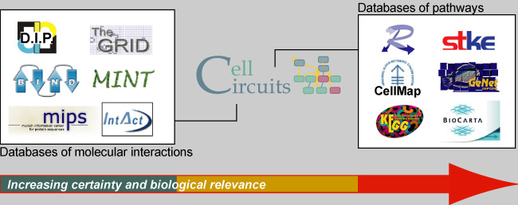

Molecular interaction models provide us with a framework for integrating the large-scale data that we are now able to collect at multiple levels of biological information - genes, RNAs, proteins, and small molecules. Cell Circuits is a web-based interface for searching our library of network models.
|
|

|
Features
Search the network models in Cell Circuits ...
(try entering words in underline bold into the search box)
- By gene
- Using gene names or aliases (registered by the GO database) (e.g. GCN4)
- Models in CellCircuits contain genes from yeast (S. cerevisiae), fly (D. melanogaster), worm (C. elegans), human (H. sapiens), and the malaria parasite (P. falciparum)
- An asterisk (*) is a wild card (e.g. RAD*)
- Enter more than one gene, each separated by a space. (e.g. YAP1 SOD1)
By Gene Ontology annotation
- Use GO ID numbers (e.g. GO:0003677)
- Use partial or complete GO term names (enclosed in double quotes) (e.g. "DNA binding")
|
CellCircuits Home |
Advanced Search |
Ideker Lab |
UCSD
Funding provided by the National Science Foundation (NSF 0425926).
Questions? Comments? Suggestions? Please see the
archives
or send email to
CellCircuits@googlegroups.com
|